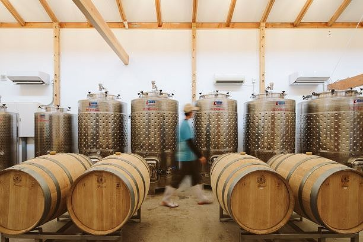
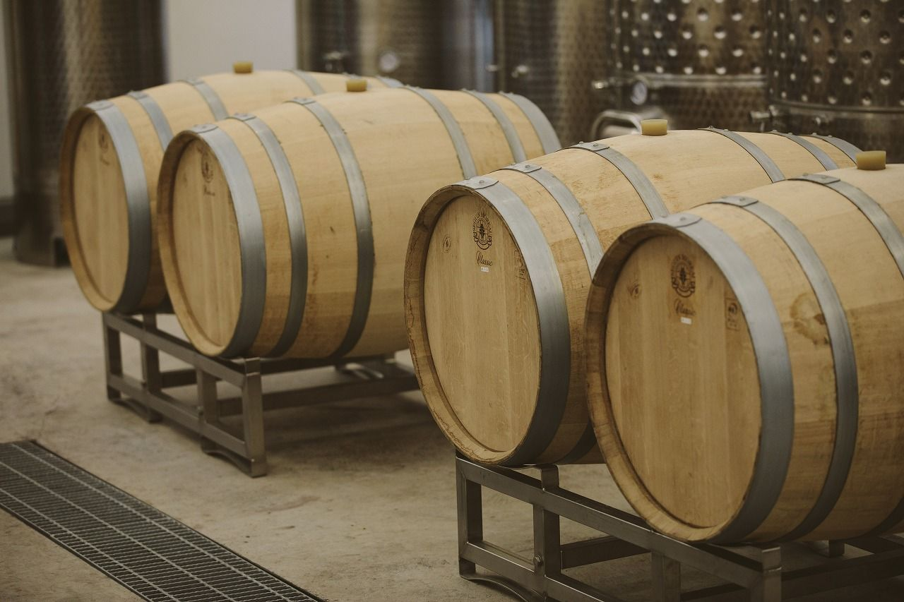
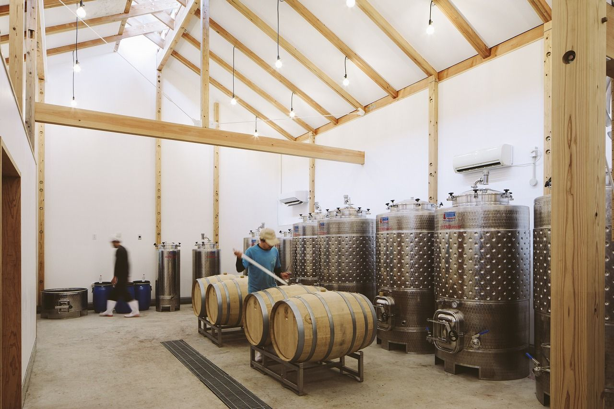
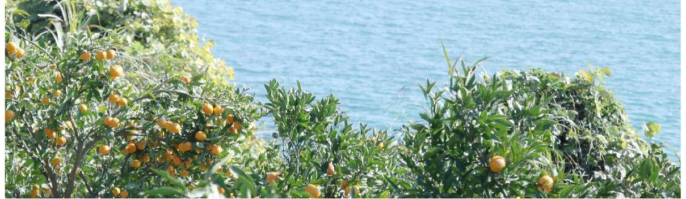

大三島みんなのワイナリー
ワイン大三島
大三島で耕作放棄地を活用したワイン用葡萄栽培から醸造までを行う、島を愛するワイナリー。ワイン販売所で有料試飲もできる。





基本情報
- 住所
- 〒794-1304 愛媛県今治市大三島町宮浦5562
- 電話
- 0897-72-9377
- 公式サイト
- ohmishimawine.raku-uru.jp
体験について
体験情報は、内容が決まり次第ご案内します。
大三島で耕作放棄地を活用したワイン用葡萄栽培から醸造までを行う、島を愛するワイナリー。ワイン販売所で有料試飲もできる。




体験情報は、内容が決まり次第ご案内します。